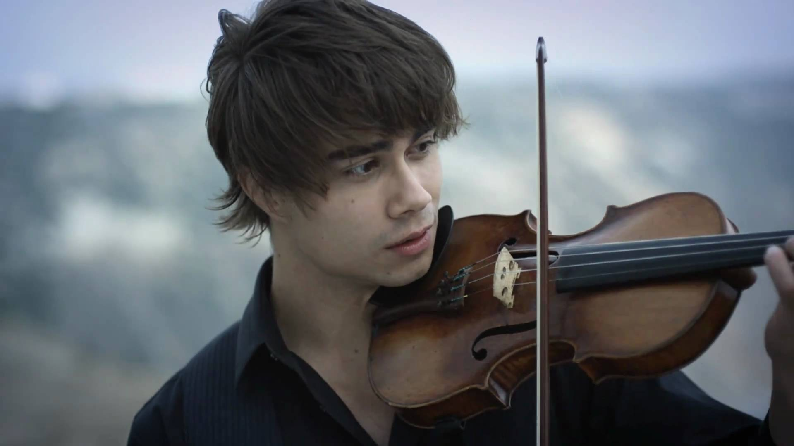
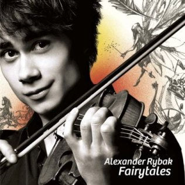

 Alexander Igoryevich Rybak (Alyaksandr Iharavich Rybak; born 13 May 1986) is a Norwegian singer-composer, violinist, pianist, actor and presenter/host. Representing Norway in the 2009 Eurovision Song Contest in Moscow, Russia, Rybak won the contest with 387 points-the highest tally any country has achieved in the history of Eurovision under the old voting system-with "Fairytale", a song he wrote and composed. His debut album, Fairytales, charted in the top 20 in nine European countries, including a No. 1 position in Norway and Russia. Rybak made a return to Eurovision in 2012 and 2016, playing the violin during both interval acts.
Rybak was born in Minsk, Belarusian Soviet Socialist Republic, Soviet Union. He became a student at the Barratt Due Institute of Music in Oslo at the age of 10. As a result of his success in the Eurovision Song Contest, he took a break from his bachelor's degree studies at the institute, but in 2011, he returned to his studies and in June 2012, he graduated from Barratt Due Institute of Music with a Bachelor of Music in violin performance.

Years ago, when I was younger
I kinda liked, a girl I knew
She was mine, and we were sweethearts
That was then, but then it’s true
I’m in love, with a fairytale
Even though it hurts
Coz I don’t care if I lose my mind
I’m already cursed
Everyday, we started fighting
Every night, we fell in love
No one else, could make me sadder
But no one else, could lift me high above
I don’t know, what I was doing
When suddenly, we fell apart
Nowadays, I cannot find her
But when I do, we’ll get a brand new start
I’m in love, with a fairytale
Even though it hurts
Coz I don’t care if I lose my mind
I’m already cursed
She’s a fairytale, yeah
Even though it hurts
Coz I don’t care if I lose my mind
I’m already cursed
Singing oah
I love you moah
You're way too young for me
But I don't mind
Never mind what your girlfriends say
Deep inside I'm quite okay
I may have fooled around once or twice
But I really need you
And it's not like I'm the only guy
I know how you make them cry
So let's start by being friends
And let this friendship never end
I knew you years ago
When I was - I don't know
But let you say it's love
Singing oah
I love you Moa
You're way too young for me
But I don't mind
Don't say maybe
Just be my lady
No need to hesitate
'Cause you'll be fine
So tell me what I want to hear
No wait - let's just leave it there
You know I'm not good for you
God - I don't know what to do!
I liked you from the start
You melt my icy heart
And now it's burning out
Singing oah
I love you Moa
You're way too young for me
But I don't mind
Don't say maybe
Just be my lady
No need to hesitate
'Cause you'll be fine
Don't go away
All what's left of me
I once believed you was in my soul
But if you saw me now - crying secretly
Would you hold my hand and never let it go?
Singing oah
I love you Moa
You're way too young for me
But I don't mind
Don't say maybe
Just be my lady
No need to hesitate
'Cause you'll be fine
I'm Singing oah
'Cause I love you Moa
You're way too young for me
But I don't mind
Don't say maybe
Just be my lady
No need to hesitate
'Cause you'll be fine
Now I'm home, but I cannot stay
I dream of you every day
Got to know every inch of you
Will you make my dream come true?
There's no place like home they say
You're my home, so hear me pray.
I don't know you, but I need more time
Promise me you'll be mine
Birds are flying over Europe skies,
Tell me please why can't I?
Times have changed, but so have I
I view my life through your eyes
On the go in my tourist's shoes
But I'll stay truthful to you
Cause there's no place like home they say
You're my home, so I guess I'll stay.
I don't know you, but I need more time
Promise me you'll be mine
Birds are flying over Europe skies
Tell me please why can't I?
I don't know you, but I need more time
Promise me you'll be mine
Birds are flying over Europe skies
Tell me please why can't I?